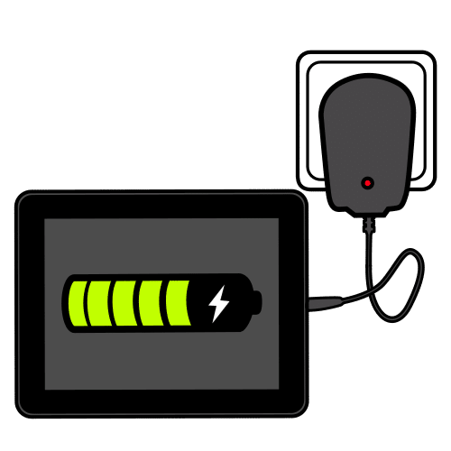

Diccionario
Alimentación

Conectividad


Imagina que vas a diseñar la placa robótica con la que vamos a trabajar en clase.
Para saber qué elementos podría llevar la placa echa un vistazo a esta tabla y elige los que quieras:
| Sensores | Actuadores |
| Pulsadores | LEDs |
| Sensor de temperatura | Altavoz |
| Sensor de luz | Motores |
| Acelerómetro | |
| Joystick | |
| Micrófono |
Definición:
Componentes que permiten que el aparato se cargue de electricidad.
Ejemplo:
La placa tiene un conector de alimentación de 5 V.
Definición:
Capacidad para conectarse o hacer conexiones y transmitir o recibir información.
Ejemplo:
La placa robótica tiene conectividad vía Bluetooth.
Aquí cuentas con un listado de otros componentes que podrían ser necesarios:


Después del accidente sufrido por nuestro robot esto es lo que ha quedado de él.
En las siguientes actividades vamos a identificar sus componentes, ¿te animas?
Os daré una placa microcontroladora, que deberéis examinar por parejas, aunque esta tarea la harás de forma individual.
Explora la placa y trata de identificar sus componentes.
Pasos a realizar:
Vas a comprobar cuánto habías acertado en la actividad anterior sin ayuda. Ve pulsando las siguientes imágenes interactivas para comprobar si has acertado o para saber cómo se llaman los componentes que no pudiste identificar.
Cara delantera:
Cara trasera:
Corrige el dibujo de la placa que hiciste ayudándote de las imágenes interactivas. Pon las correcciones en rojo para que te des cuenta de si habías acertado mucho o poco. No te preocupes si habías fallado mucho, en estas actividades estamos aprendiendo y equivocarse es una buena forma de aprender. No vas a tener "mala nota" si te equivocas, siempre que hayas corregido convenientemente tus errores. Vuelve a escanear el dibujo corregido y añádelo al documento de respuestas.
Aquí tienes la imagen con los componentes de la cara frontal.

Aquí tienes la imagen con los componentes de la cara trasera.
El modelo de nuestra placa robótica es micro:bit, puedes encontrar mucha información sobre ella en su página oficial microbit.org
Obra publicada con Licencia Creative Commons Reconocimiento No comercial Compartir igual 4.0
{kind=link}